撮るだけで、投稿できるVlogに。
話すのも、見せるのも。
App Storeで近日公開iPhone（iOS 26以上）本体無料
買い切り・完成動画にロゴは入りません
完成した、一本。
日付と、時刻つきのコメントが入った、TORUTTOで仕上げたVlogの一部です。
撮るのは好きなのに、編集で止まる。
- 並べる、切る、色、文字、音楽、書き出し。毎回ぜんぶを決めるのは、しんどい。
- 何でもできるアプリほど、何もしないまま閉じてしまう。
- 撮りためた日々が、形にならないまま、フォルダの中で眠っていく。
トルットは、撮ることと、一本に仕上げることを、
撮る、ととのう、完成。
- 撮る
- 話すところは、止めるまで撮れます。見せたい景色や手元は、3・5・10秒で自動で止まります。写真アプリの動画も取り込めます。
- ととのう
- 撮った順のまま、色と文字と音が重なります。アプリが勝手に並べ替えることも、元の素材を書き換えることもありません。
- 完成
- はじまりと終わり、タイトルとサムネイル、字幕まで入った、横16:9の一本に。あとから声も足せます。写真アプリへ保存したり、共有したりできます。
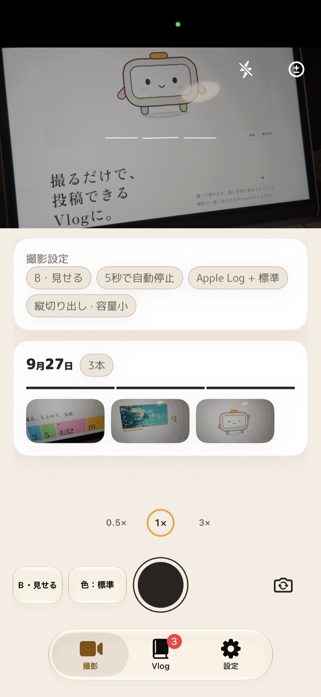
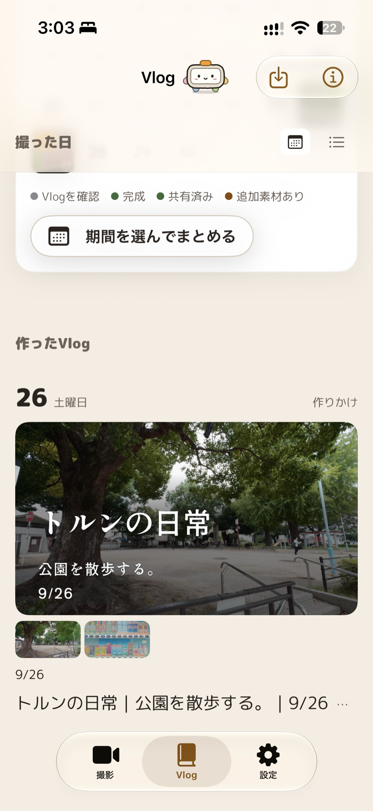
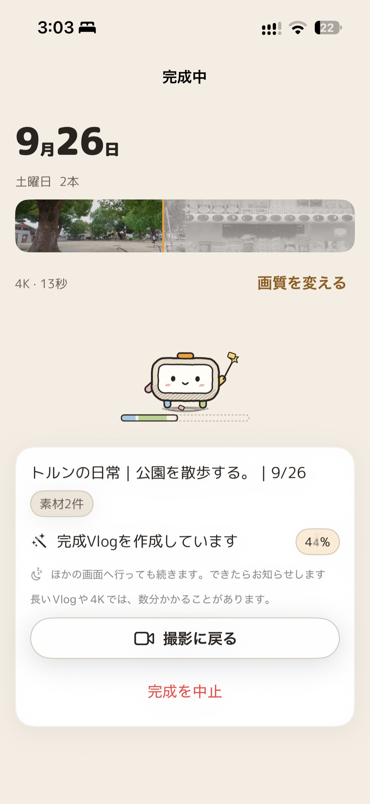
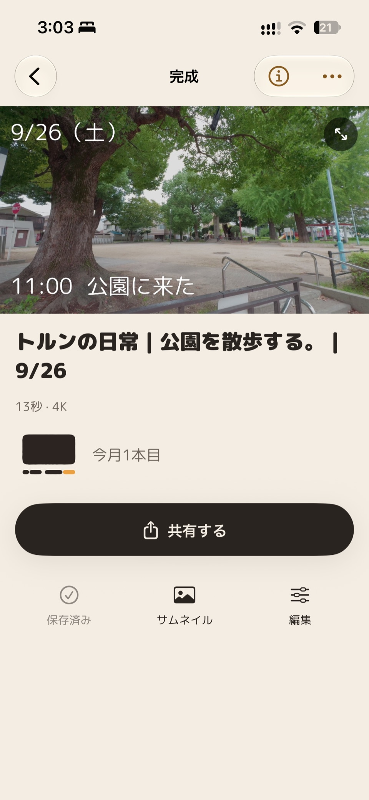
選ぶのは、雰囲気と色だけ。
テーマは、日常・ミニマル・シネマ・フィルムの4つ。1つ選ぶと、仕上がりの項目が一度にそろいます。迷うところは、先に決めておきました。
色は、TORUTTOが作った9つと標準から、選ぶだけ。Apple Logで撮った素材も、見やすい色に仕上げます。強さと粒も選べます。
色を細かく作り込む道具は、置いていません。自分で作った色の表がある人は、TORUTTO+で読み込めます。
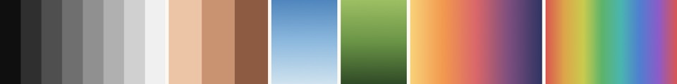
標準見たままに近い、素直な色
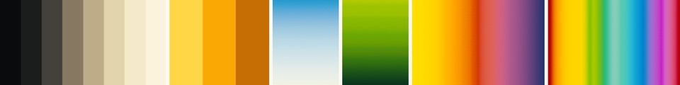
琥珀琥珀のように深くあたたかい、映画のような色
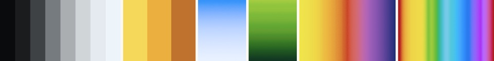
群青群青のように深く青い、映画のような色
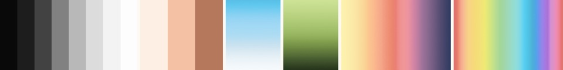
銀灰銀色がかった灰のような、渋いドキュメンタリーの色
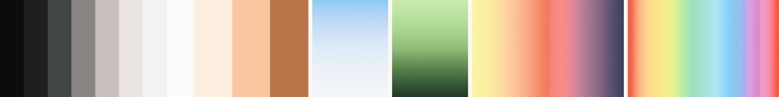
象牙象牙のように少し黄ばんだ、懐かしいネガの色
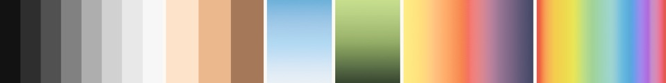
真珠真珠のように淡くやわらかい、落ち着いた色
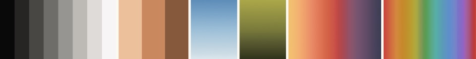
黄土黄土のような、温かい土の色
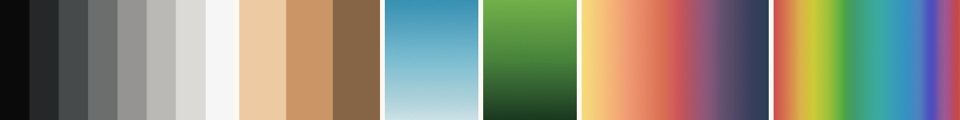
翡翠翡翠のように深い、しっとりした緑
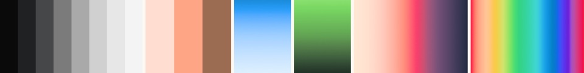
黒曜黒曜石のように暗い所が深い、濃い映画の色
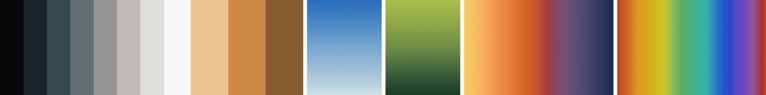
珊瑚珊瑚色の肌と青い影がくっきり分かれる色
あなたの日々は、iPhoneの中に。
撮った動画も声も、iPhoneの外へは送りません。字幕の文字起こしも、顔を隠すための解析も、iPhoneの中で行います。
アカウント登録はありません。広告も、利用状況を追いかける仕組みも入っていません。
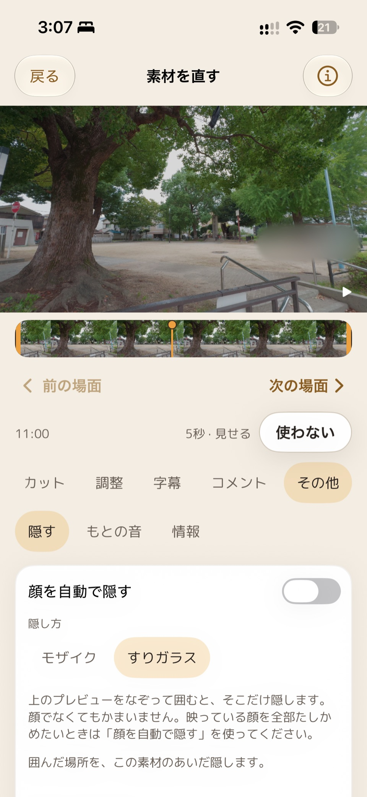
できること
- ほかのカメラの動画も
- 写真アプリから取り込めます。色を決めた素材は、その色のまま。
- あとから声を足す
- 仕上がりを見ながら、ナレーションを録って重ねられます。
- 字幕が自動でつく
- iPhoneの中で声を文字にします。まちがいは直せます。
- 話すとBGMが下がる
- 話しているところは、音楽が自動で小さくなります。
- 飛び飛びの日も一本に
- 旅行の数日も、春から秋までも。日付の区切りも入れられます。
- タイトルとサムネイル
- 一本と一緒にできます。サムネイルは4つのかたちから。
- Apple Logで撮れる
- 対応するiPhone（Proモデル）で。専用の色の表で仕上げます。
- 映った顔を隠す
- iPhoneの中で見つけてぼかします。手で範囲を足すことも。
- すぐ撮れる
- ウィジェットやコントロールセンターから始められます。
無料で、ちゃんと一本。
撮影から完成まで、無料のままで全部できます。1080p・10分までの一本に、ロゴは入りません。月額の支払いもありません。
無料
- 撮影から完成まで、全部の流れ
- 1080p・10分までの一本
- 内蔵の色9つと標準、BGM 12曲、自分の曲
- 完成動画にロゴは入りません
つくった人から
Vlogを作っていたけれど、編集が面倒で、いつの間にか撮るだけになっていました。思い出は、写真アプリにたまっていくだけ。
並べる、切る、色、文字、音楽。全部が面倒で、撮るだけで完成してほしかった。それがトルットのはじまりです。
撮った順のままにしたのは、時間の順に見てもらうことが、いちばんその人の生活が伝わると思うからです。色は、自分の好きな映像を撮るために必要なものをそろえました。値段は、自分がうれしいと思う買い切りにしました。
日常を動画で残して、身近な人にも、インターネットの向こうの人にも見てもらって、感想をもらう。そうして、日常をもっと残したくなってもらえたら、うれしいです。
よくある質問
- 無料でどこまでできますか？
- 撮るところから一本を完成させるまで、全部の流れを無料で使えます。完成した動画は横16:9、1080p、10分までで、透かし（ロゴ）は入りません。内蔵のBGM 12曲、自分の曲、内蔵の色9つ（琥珀・群青・銀灰・象牙・真珠・黄土・翡翠・黒曜・珊瑚）と標準、テーマ4つ（日常・ミニマル・シネマ・フィルム）、字幕、顔を隠す機能、あとから声を足す機能、まとめVlogも無料です。 続きを読む（無料でどこまでできますか？）
- 撮った動画はiPhoneの外へ送られますか？
- 送られません。撮った動画、声、コメント、字幕は、あなたのiPhoneの中だけで扱います。運営者のサーバーも、外部のAIサービスも使っていません。広告や、利用状況を追いかける仕組みもありません。 続きを読む（撮った動画はiPhoneの外へ送られますか？）
- TORUTTO+は買い切りですか？
- はい、買い切りです。一度買えば、月ごと・年ごとの支払いはありません。値段は、App Storeの購入画面に表示される価格です。TORUTTO+で増えるのは、4Kでの完成、10分より長い一本、自分のLUT（.cube）の読み込みの3つです。自分の曲は無料版でも読み込めます。 続きを読む（TORUTTO+は買い切りですか？）
App Storeで近日公開
iPhone（iOS 26以上）本体無料
撮ると、一本になる。